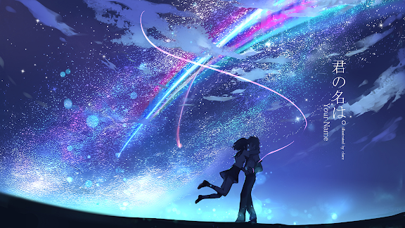
Kimi no Na Wa
In the summer of 2016, the world was astonished by an anime film called Kimi No Na Wa.
Currently, this is the highest grossing anime film in all of history! Why did this happen?
What makes this movie so great?
The romantic, adventurous and breathtaking story of Kimi No Na Wa is about
the lives of two young high school students who undergo a strange and bizarre phenomenon where they switch places and
bodies at random times when they wake up from their sleep. This fun and interesting concept will keep you engaged and excited.
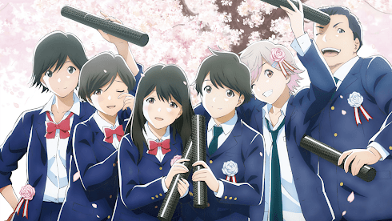
Tsuki Ga Kirei
Do you guys remember middle school? Do you ever miss those carefree, long and stress-free days?
Remember those amusing and charming friends? If you answered yes to these questions, Tsuki Ga Kirei is the anime for you!
Tsuki ga Kirei is a middle school romance and slice of life/drama series which is not the most popular romance series of all time,
but it is enjoyable and fun to watch after a hard day of school or work since its storyline is quite relaxing and it gives off a calm and laid back emotion.
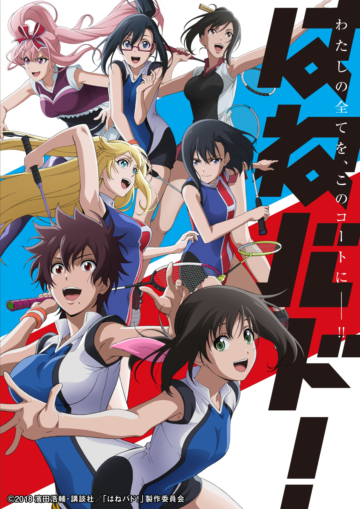
Hanebado!
Sports anime in general are quite subjective because everyone has a favourite sport and a lot of anime
viewers tend to stay away from sports anime solely because they are just not interested, but... sports anime
can be enjoyable if the story and the characters show their personality while playing their specific sport.
Hanebado! is a sports anime focused around a girl's high school badminton team. The series begins when Nagisa,
the lead player loses a game 21-0. Nagisa's love and passion for badminton begins to fluctuate as she just lost an important game.
Her opponent, Ayano Hanesaki, had obstructing thoughts about the sport and was questioning herself why she wanted to play badminton in the first place.
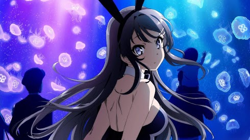
SEISHUN BUTA YAROU WA BUNNY GIRL SENPAI NO YUME WO MINAI
Have you ever wondered about mixing two opposite genres to create a fantastic show? What if those genres were slice of life/romance and psychological? How would the series turn out?
Bunny Girl Senpai is a slice of life/romance show with a heavy influence on psychology as well as perception. The series is about a high school boy,
Sakuta who notices a girl wearing a bunny rabbit costume at the library. The girl is ignored by everyone else and Sakuta begins to wonder why, and becomes friends with this girl
who was a well-known celebrity before people began to forget about her and ignore her.
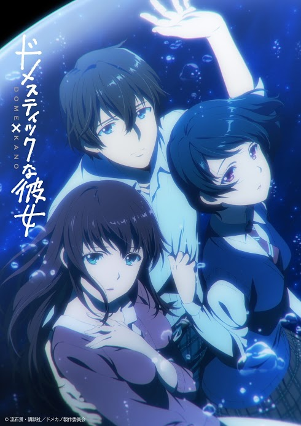
Domestic Na Kanojo
Domestic Na Kanojo became one of the most popular anime series for winter 2019, but not because of its characters or their personalities. It became extremely popular
because of its intense and captivating plot and spicy drama which makes every episode feel suspenseful.
This genre of student and teacher is quite controversial in the anime community, but this show made quite an exception mainly because
it included another 'relationship' in the midst of it all.
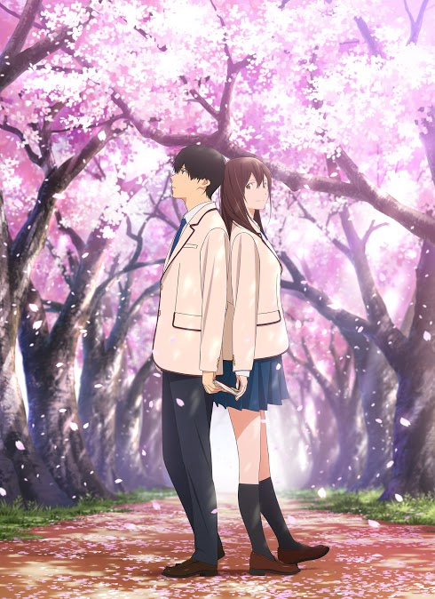
Kimi no Suizou wo tabetai
Kimi No Suizou Wo Tabetai or Let Me Eat Your Pancreas is an emotional and heartfelt film which released in the summer of 2018.
The beautiful spring season has washed over Japan and the cherry blossoms are in full bloom.
We meet two high school students Sakura Yamauchi along with a 'boring' and 'dull' boy. What becomes of this film and with these two
characters is a true masterpiece to any anime fan out there!
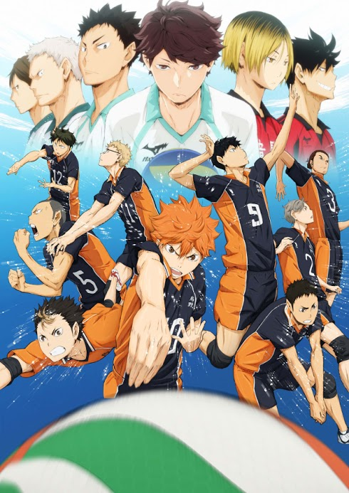
HAIKYUU!
Although many sports anime can be repetitive and lack major character development,
Haikyuu! is a series that defies that common stereotype by not only bringing breathtaking gameplay and volleyball,
but by having emotional, relatable and amicable characters.
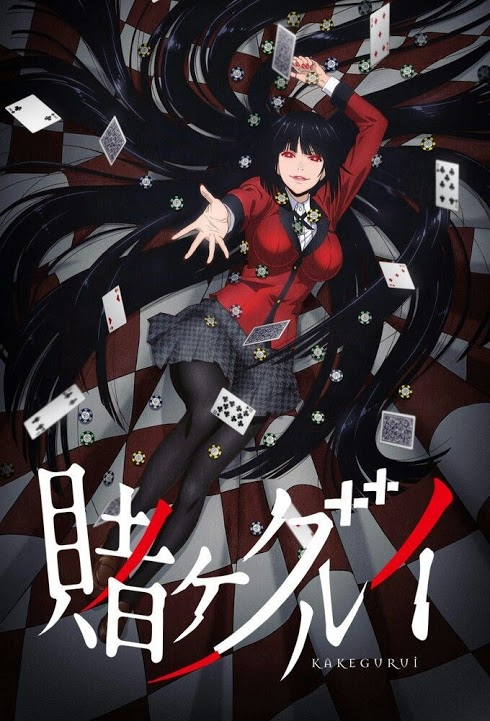
Kakegurui
Shonen anime, as great and cool as they may seem can get quite boring sometimes. Year after year and season after season of the same combat styles and fights. Do you want something different?
Something more 'intellectual'? Something with more risk? If you answered "yes" to any of these questions,
Kakegurui is the anime for you.
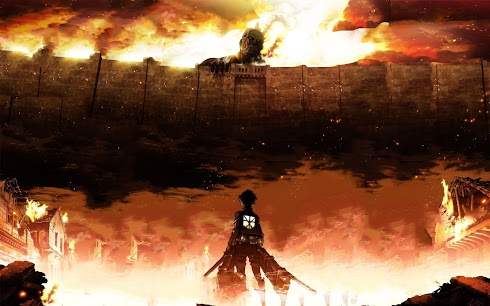
Shingeki no Kyojin
Where do I begin with this one? Attack on Titan is labeled as one of the best anime of all time on most anime websites and review sites, and for good reason,
it's actually one of the very first anime that I watched, and I thoroughly enjoyed it. The series is so popular in the international anime community that many of those
who don't watch anime or haven't heard of anime, have seen and loved Attack on Titan!
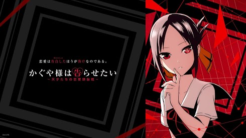
KAGUYA-SAMA WA KOKURASETAI: TENSAI-TACHI NO RENAI ZUNOUSEN
Kaguya-sama is a unique romance and comedy which aired in the winter 2019 anime season. The series focuses on two lovebirds; Kaguya and Shirogane. Shirogane is the school's student council president, and Kaguya plays an important role in the student body
as well. Both of these characters are 'geniuses' boasting extremely high grades.
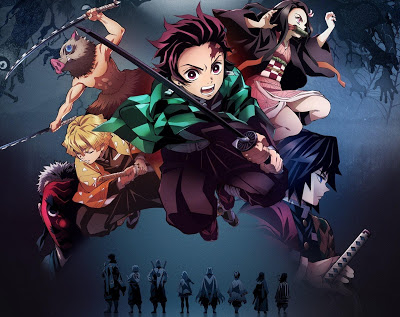
kimetsu no yaiba
Kimetsu No Yaiba or Demon Slayer was released in the spring of 2019 and was one of the most anticipated in 2019, partly because 2019 had many anime released in the winter and spring that broke multiple records, like Domestic Girlfriend,
The Promised Neverland and the modern remake of Dororo, an absolute timeless classic. Because of this, Kimetsu no Yaiba had a lot of pressure riding on it, and the anime audience was anticipating
for an amazing shounen once more, and ufotable definitely delivered..
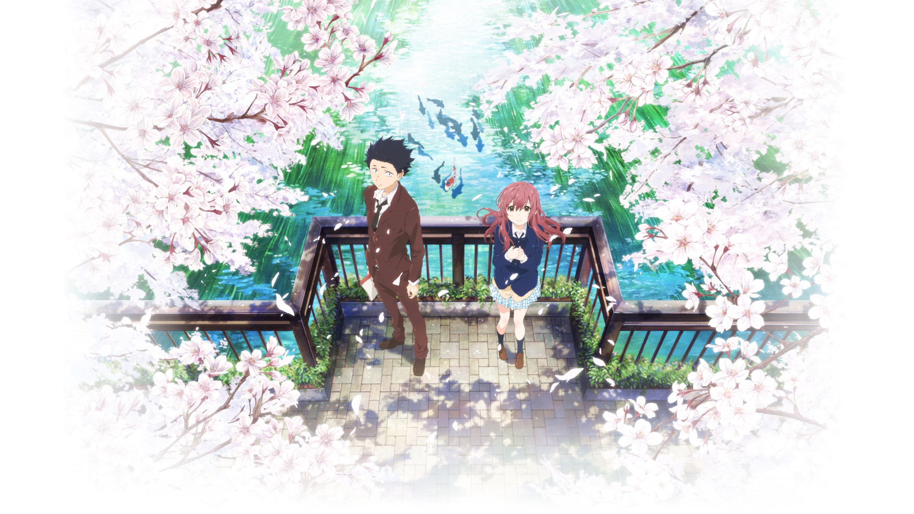
Koe no Katachi
Koe No Katachi is a film which came out in fall 2016 which is one of the most awarded and famous anime films of all time.
This emotional story of a deaf girl named Nishimiya Shoko and her story of getting bullied when she moves to a new school by her classmates, especially by a young boy
named Shoya Ishida left many viewers of the film in tears because of such a captivating and emotional story which unfolds throughout the film.
{kind=link}
{kind=link}
{kind=link}
{kind=link}
{kind=link}
{kind=link}
{kind=link}
{kind=link}
{kind=link}
{kind=link}
{kind=link}
{kind=link}